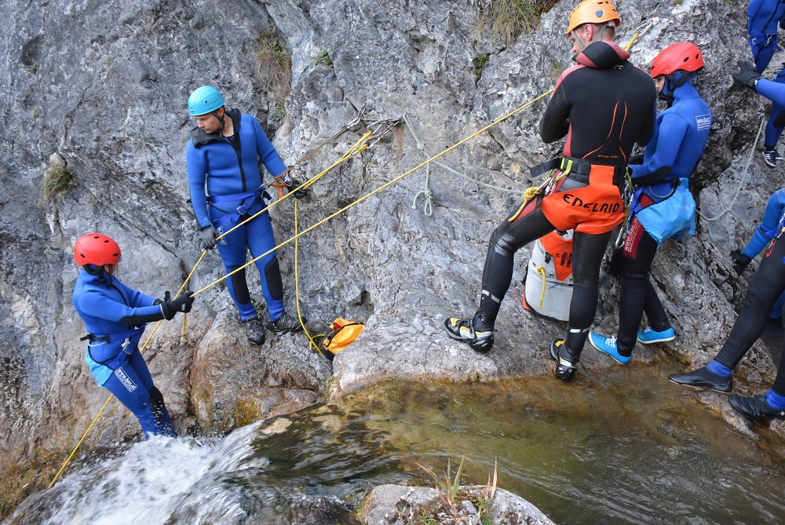

Der Trendsport der letzten Jahre heißt sicherlich Canyoning. Das Erleben der beeindruckenden Schönheit dieser vom Wasser ausgewaschenen Schluchten ist selbst für eingefleischte Natur- und Bergliebhaber ein überwältigendes Erlebnis. Bei der Sportart Canyoning folgt man gehend, rutschend, springend und bei höheren Stellen durch Abseilen dem natürlichen Lauf des Wassers von oben nach unten. Auf Basis dieser Faktoren wird auch die Schwierigkeit der Tour bemessen. Je länger und höher die Strecke, desto schwieriger der Canyon.
Du möchtest in den Canyoningsport mal reinschnuppern und erste Erfahrungens sammeln? Wir haben sowohl in Salzburg als auch in der Steiermark die richtigen Touren für Dich. Viele Sprünge und Rutschen, das bietet die Almbachtour im Salzburger Land. Von allem etwas - also Abseilen, Rutschen und Springen - kannst Du bei der Tour Aquarium erleben, die im steirischen Salzatal startet.
Du hast schon einige Touren in Beinen und bist körperlich gut in Schuß (nicht bloß am Telefon beim Buchen !), dann bist Du bei Touren wie Bruckgraben, Jabron oder Altersbach herzlich willkommen. Wer dies schon kennt, der kann mit uns ja am beispielsweise am Gardasee austoben. Dort warten im Umkreis von Riva europaweit bekannte Touren.

Canyoning erfordert ein großes Maß an alpin- und wassertechnischer Qualifikation - ist man erst einmal in eine Tour eingestiegen, ist ein Rückzug vor Ende der Tour oft nicht mehr möglich. Diese Sportart darf nur mit kundiger Führung durchgeführt werden. Wer diesen Sport selbständig ausüben möchte, sollte über ausreichendes Wissen in den folgenden Themengebieten verfügen:
Weitere Infos finden Sie bei canyoning.at